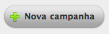
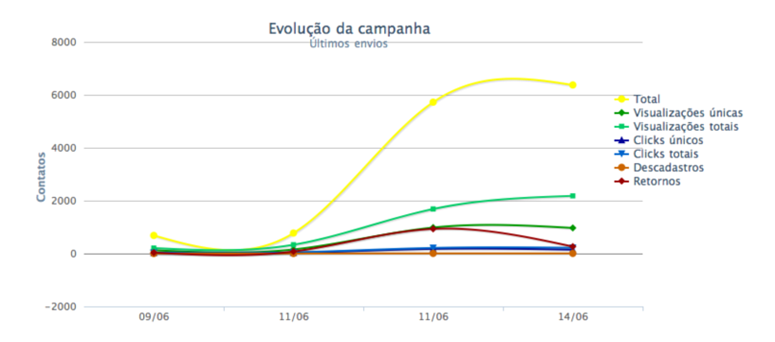

1 Criando Uma Nova Campanha
Selecione Mensagens na barra de navegação do Mailee.me
Se você nunca usou o Mailee.me antes, a sua tela de mensagens estará vazia e a única forma de criar uma nova mensagem é criando uma nova campanha. Para isso basta clicar no botão

Mas porque é necessário criar uma campanha antes de realizar o envio da mensagem? Porque a campanha é quem agrega todas as métricas das mensagens como índices de visualização, retornos e descadastros.
Além disso, ao enviar uma nova mensagem de uma campanha existente, os dados de remetente, template, lista e conteúdo já estarão preenchidos.
Na tela de nova campanha preencha os dados de Assunto das mensagens, Nome e email do remetente. Optando por usar o Analytics você poderá rastrear os acessos ao seu site que tiveram origem nos emails enviados pelo Mailee.me.
Após selecionar a lista para quem as mensagens serão enviadas, basta clicar em salvar e você será redirecionado automaticamente para tela de uma nova mensagem.
2 Métricas
Quando você utiliza uma campanha para realizar envios periódicos para um público em específico você pode se perguntar se está tendo retorno sobre estas ações. As métricas irão responder a esta questão e mais algumas.
Para isto, basta clicar no nome da campanha.
Exemplo de uma campanha ao longo do tempo.

- Havendo aumento de visualizações, mostra que os seus contatos têm interesse em visualizar a sua mensagem.
- Um grande número de descadastro pode demonstrar que não há mais interesse no conteúdo nas mensagens.
- Um número decrescente de descadastros mostra que sua base de dados está se tornando sólida com contatos que possuem interesse nos assuntos das suas mensagens.
- Um aumento nas visualizações totais demonstra que sua mensagem tem sido relida ao longo do tempo e ou enviada para outras pessoas por um contato que acredita que o conteúdo é relevante para outras pessoas.
3 Editando as Campanhas
Após uma campanha ter sido criada é possível editar algumas informações, como o nome da campanha. Se necessárop, os dados de remetente e assunto podem ser editados diretamente na mensagem. No 2º passo.

4 Reenvio de Mensagem para Listas Diferentes
É possível realizar o reenvio da mensagem para outras listas de contatos. Altera-se a lista no 2º passo de envio da mensagem. Todo conteúdo da mensagem é copiado quando o reenvio é utilizado. Assim é possível comparar no gráfico da campanha quais listas de contatos respodem melhor à assuntos específicos.